原文连接:https://www.cnblogs.com/linhaostudy/p/11661384.html
本文在上述的基础上介绍优先队列的另外一种支持高效合并操作的实现——二项队列。原来在介绍二叉堆和左式堆的时候喜欢从结构性和堆序性两个方面介绍，它们二者都是特殊的二叉树结构，但是二项队列不能单纯的从结构性和堆序性两个方面介绍了因为二项队列并不是我们熟悉的树结构，而是树的集合——森林,本篇文章从二项队列的结构性出发介绍二项队列的基本原理。
一丶二项队列的结构性
二项队列是一群树的集合，是森林，是特殊的森林。这个森林的特殊之处在于组成森林的树都是二项树，下图就是最为典型的二项队列。
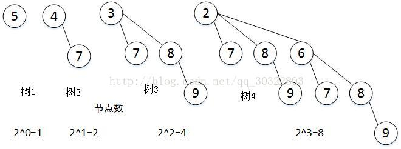
图1 典型的二项队列
图1所示的是一个典型的二项队列，它是由四课树组成的森林，接下里对应图1所示的结构介绍二项队列具有的性质和特点。
(1)二项树，观察图1中的四棵树，若不考虑节点数值的因素，可以看出树2是由两个树1拼凑而成的，其中一个树1结构充当另外一个树1的右子树。观察树3同样也是如此，是一颗树2充当了另外一颗树2的右子树生成而来，同理可见树4。依据上述规律所生成的树都称为二项树，树1，树2，树3，树4均是二项树。根据二项树的生成规律，不难知道高度为i的二项树的结构是固定的，其节点总数为2^(i-1)个。
(2)二项队列从结构上来说是由高度不重复的若干个二项树构成的森林，高度不重复意味着相同高度的二项树在二项队列中最多存在一个。这里特别要注意二项队列中的二项树的高度不强制是连续的，比如高度为2的二项树不存在，高度为5的二项树却存在。
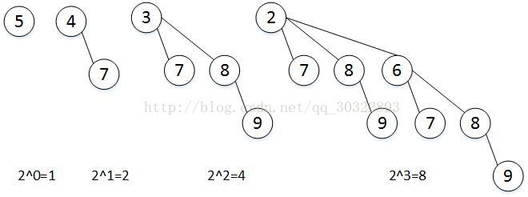
其实也很好理解，二项队列总节点数15，表示为二进制就是1111，二项树的节点数正好符合二进制上每位的权值。
二丶二项队列的“堆序性”
假如一个森林，仅仅满足了上述的结构性，那它也还不是二项队列，毕竟二项队列是优先队列的一种实现，无论如何也是需要具备和二叉堆和左式堆一样的堆序性质的。同样借助图1来介绍二项队列所具备的”堆序性质”。
(1)组成二项队列的所有二项树都具有一致的堆序性，每一个二项树不仅仅满足堆序性，而且每个二项树的堆序性必须保持一致，要么都是大根堆，要么就是小根堆。
三丶二项队列的建堆操作
合并操作是二项队列中的核心操作，在合并操作的基础上可以轻易的实现插入操作，因为插入操作可以理解为节点数为1的二项队列的合并操作，而建堆操作则可以理解为一系列的插入操作。接下里利用图例的形式来讲解二项队列的建堆操作，借用建堆的过程来清晰的阐述合并操作和插入操作。待建堆的操作如下，构建一个低优先级先出队的二项队列。
int[]A = new{5，4，3，2，1，9，7 }待建立二项队列的数组元素(1)在实现二项队列的合并操作之前，需要特别说明二项队列的森林结构是利用一个节点数组来存储的，数组当中的每一个节点都代表一个二项树的根。对于节点数为N的二项队列而言，其二项树的个数可计算为Log(N)，对数组大小的分配具体参加Log(N)，此处为了简单数组的大小分配为:Math.ceil(Log(N))+1=4，HeapNode [] item = new HeapNode[4]。HeapNode是二项树节点定义。
如图所示：
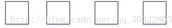
(2)对于数组A而言，入队第一个元素A[0] = 5，取二项队列数组的第一个元素item[0]，依据item[0]是否为空来采取后续措施，如下伪代码所示。
if(item[0]==null)
item[0]= new HeapNode(A[0]);
else
merge(item[0],newHeapNode(A[0]));依据如上的伪代码此次执行的是if下的逻辑，入队后结果如下：
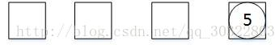
图4元素5入队结果
(3)继续入队第二个元素A[1] = 4,同样的取出二项队列的第一元素item[0]，带入步骤2的伪代码逻辑，发现执行merge(item[0],newHeapNode[A[1]])逻辑，重点来了，此时执行的是merge(合并)逻辑，合并的对象是两个只包含根节点的二项树，将根节点较大的二项树，充当根节点较小的二项树的子树，合并完成，结果如下
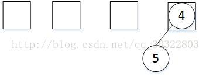
图5元素4入队结果
如图5所示，原有的两个二项树合并成了一个新的二项树，但是此时合并操作并没有结束，新合并的二项树不能存放在原有数组的位置，其存放的数组下标+1.调整结果如下。
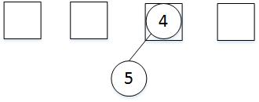
图6 元素4插入二项队列的最终结果
(4)继续入队第三个元素3，重复步骤2，结果如图7所示
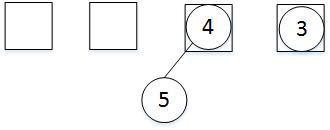
图7元素3插入二项队列的最终结果
(5)继续入队第四个元素2，重复步骤2，发现Item[0]处存在元素，则重复步骤3，在步骤3中发现一个新问题，如下图所示：
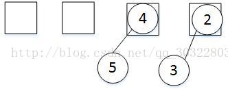
图8 元素2入队的中间结果
如上图所示，元素2插入后需要和元素3进行合并，并且将合并的结果存到下标+1处即下标为1处，但是发现下标为1的地方以存在一个二项树，此时需要继续合并，将下标为1处的原二项树和新合并产生的二项树进行合并，合并结果如下：
——原理解析【转】8.png)
图9 元素2的入队最终结果。
观察图9所示的结果，可以发现合并后高度为3的二项树，同样不存放在其原有的位置，而是存在其原有位置的下标+1处。其建立二项队列操作介绍到此处，可以发现在二项队列的数组中，二项树的高度和存储位置的索引一一对应，高度为1的二项树，存在下标为0处，高度为2的二项树存在下标为1处，高度为3的二项树存在下标为3处，依次类推高度为i的二项树，存在下标为i-1处。
(6)继续入队第五个元素1，重复步骤2，入队结果如下图所示
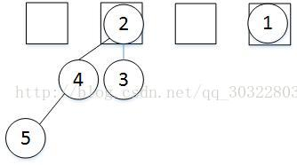
图10元素1的入队结果
(7)继续入队第6个元素9，重复步骤2。结果如下：
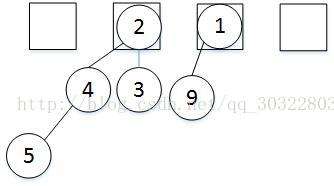
图11 元素9的入队结果
(8)继续入队第7个元素7，重复步骤2.结果如下：
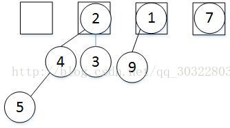
图12元素7的入队结果
依据上述的8个步骤，十分清晰的了解了二项队列的建队操作，为了进一步的加深对二项队列的认识，下面来介绍一下二项队列的合并操作。
四丶二项队列的合并操作。
在上述的二项队列建队操作中，其实每一次插入操作都是特殊的合并操作，
都可以看成一个节点的二项队列的特殊合并操作。二项队列的合并过程其实用一句话就可以描述——将高度相同的二项树合并。此处采用两个简单的二项队列来阐述两个二项队列合并的具体实现过程。
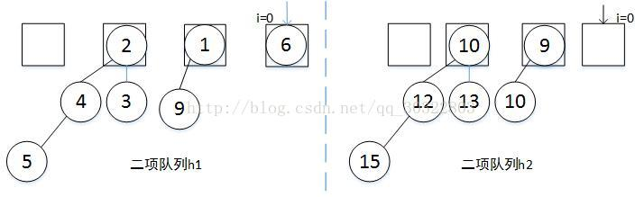
图13 待合并的两个二项队列
(1) 如图13所示两个待合并的二项队列，在合并的过程中维护这一个指针i，i的初始值指向第一个元素i=0，这里假设合并的过程是h2并入h1的过程。分别取出h1和h2中第i个元素,发现h2对应的元素是null，不做处理,i++，结果如下。
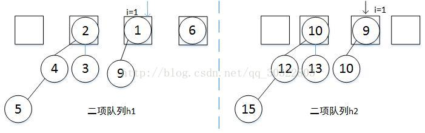
图14合并第一步
(2)和步骤1的处理相同，分别取出两队列中第i=1个位置的二项树，均不为空，所以合并这两个子树，合并的结果存放到i+1=2处的位置，同时删除原队列中第i=1个位置的二项树，i++。在此过程中出现了冲突，第个i=2位置存在了二项树，处理的方法和插入过程中处理合并的方法保持一致。合并结果如下：
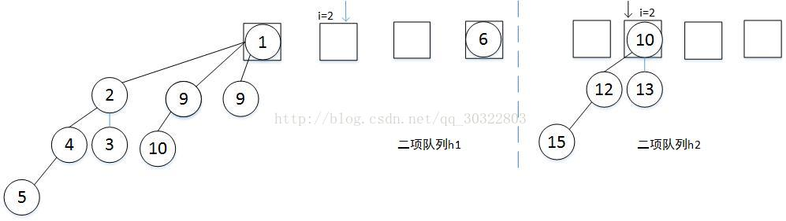
图15 合并第二步
(3)如图15，此时i=2，两个二项队列分别取出第i个位置的二项树，发现h1中为null，h2不为null，所以此时直接利用h2中的二项树去覆盖h1中的第i个位置就行，然后删除h2中的二项树，i++，结果如下图所示。
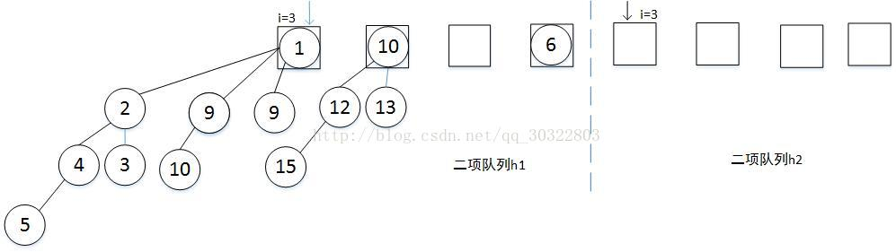
图16合并第三步。
(4)指针i移动完毕，该次合并结束。
五丶二项队列的删除操作
在了解二项队列的合并操作后，理解二项队列的删除操作就十分简单了，假设待删除二项队列为H1，步骤如下：
- 遍历H1中的数组，找到根节点值最小的二项树tree1，其根节点值就是出队值。
2.从H1数组中删除该二项树tree1，将删除tree1后的二项队列记为H2.
3.对于二项树tree1，删除其根节点，利用其子树d1，d2，d3….组成一个新的二项队列H3。
4.合并H2和H3,合并后的二项队列就是删除操作后的二项队列。
在详细的了解二项队列建队，删除，和插入操作后，可以给出二项队列操作的时间复杂度(不做分析证明)。
1.合并操作的时间复杂度为LogN。
2.二项队列删除操作中，找到具有最小根节点值的二项树的时间消耗是O(logN)，合并两个二项队列的时间操作是Log(N)，删除操作的时间复杂度综合起来也是Log(N)。
3.插入操作的时间复杂度是常数，这也是二项队列优于左式堆的地方所在。